Reference
Source Material
The designer's originals that this system was built from. They are here so the system can be checked, extended and argued with without needing the full 194 MB archive — when the implementation and the manual disagree, this is where you look.
Colour
Implemented in Foundations · Colour.
{kind=link}
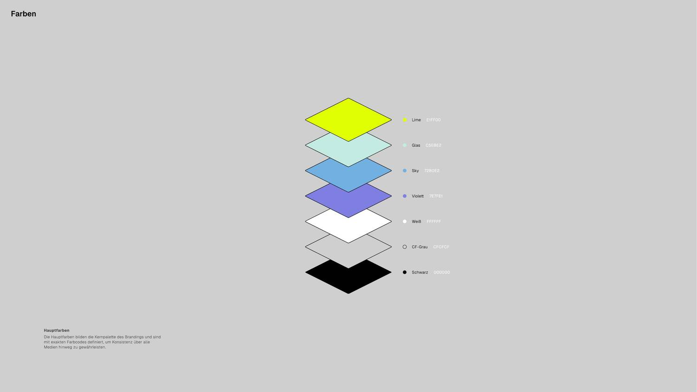
{kind=link}
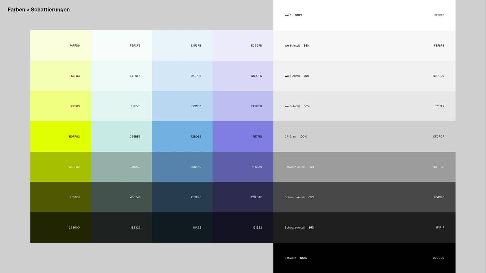
{kind=link}
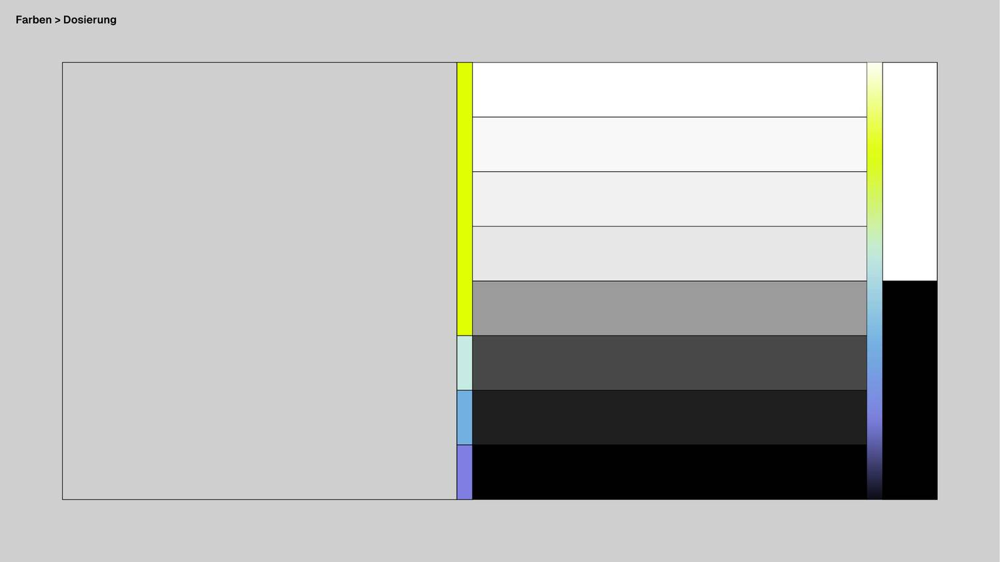
{kind=link}
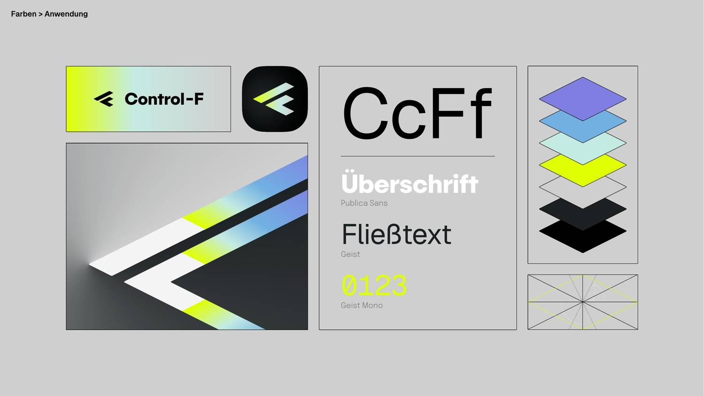
#F1F1F1 but labelled #D9D9D9. Every
other swatch on the plate — all four accent columns, all seven rows — matches its
label. The system follows the paint, because it is the value the arithmetic gives.
Reasoning in Foundations · Colour.
Typography
Implemented in Foundations · Typography.
{kind=link}
{kind=link}
{kind=link}
{kind=link}
Grid
Implemented in Foundations · Layout & Grid and Geometry & Lines. The Isometrie-Raster plate draws the lattice as a ground with objects standing on it, and that half of it is Foundations · The Field.
{kind=link}
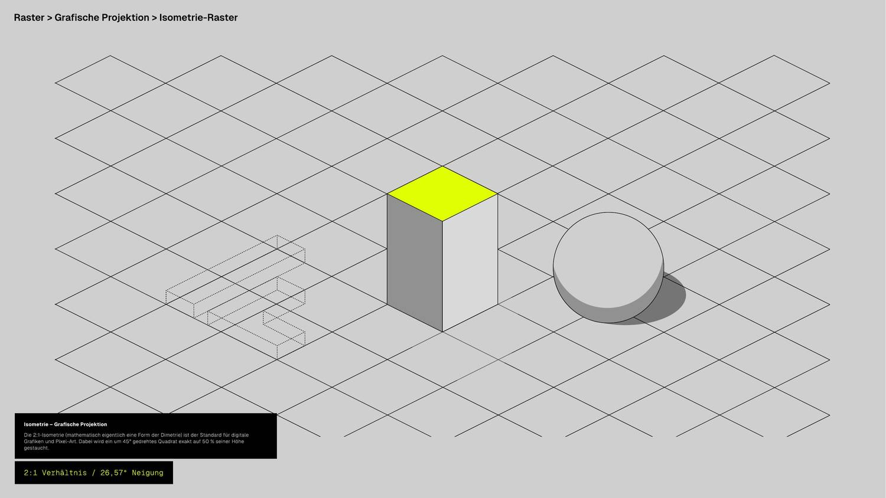
{kind=link}
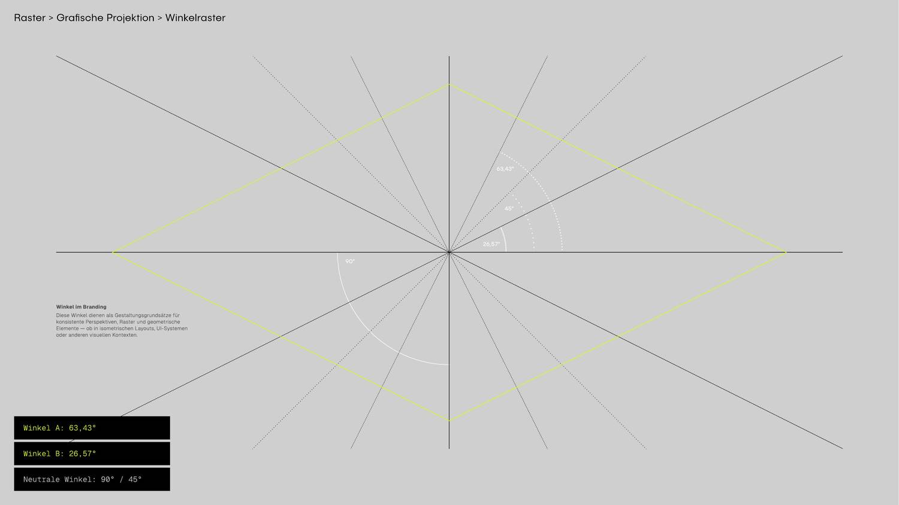
{kind=link}
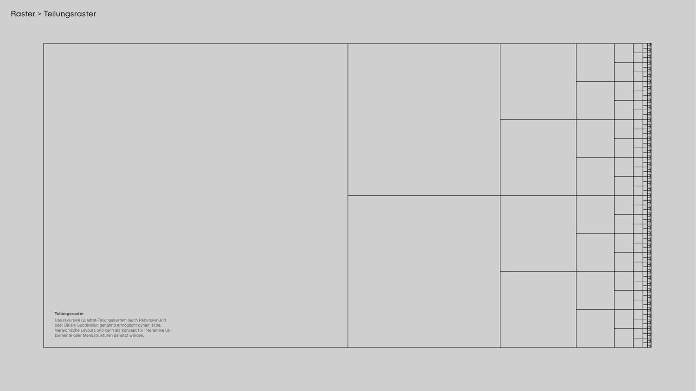
{kind=link}
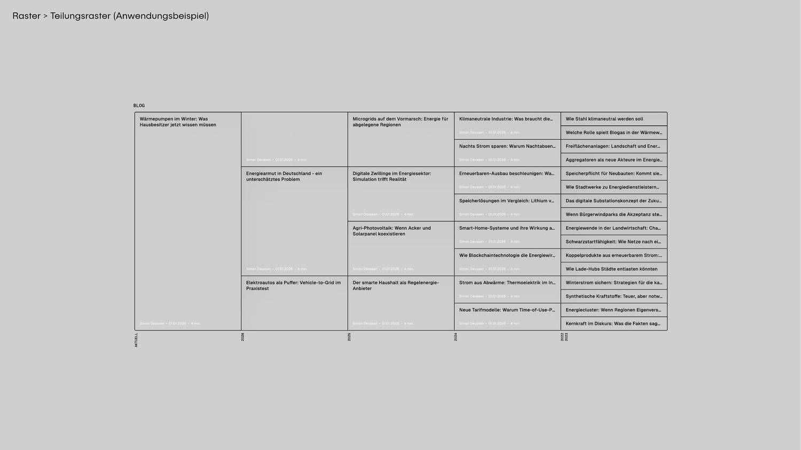
The first plate makes a claim the drawing cannot show. Its caption says the recursive system "kann als Konzept für interaktive UI-Elemente oder Menüstrukturen genutzt werden" — a use no plate in the manual illustrates, because a book cannot draw a layout that answers to a reader. Subdivision Field is that sentence built: the same halving series, with which cell stands at its head handed over to whoever is looking at it.
The second plate has an angle the implementation had never drawn. The Winkelraster lists four and draws two of them dotted: 45° is a neutral construction ray, and
--angle-neutral had a token, a row in the angle
table and no consumer anywhere in the tree — because a system that never draws its
construction never reaches for it.
Foundations · The Construction Layer is
where the plate's star is drawn as a material, over the objects it set out.
Shape language
Implemented in Geometry & Lines, Materials and — for the last two plates — Illustration.
{kind=link}
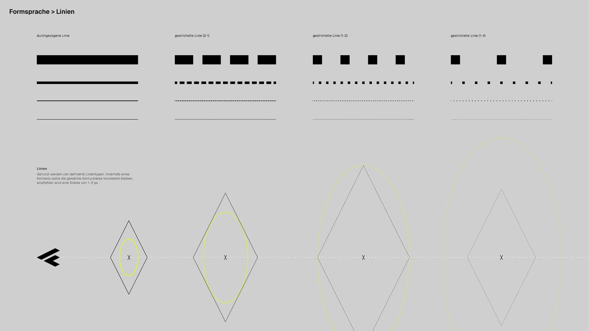
{kind=link}
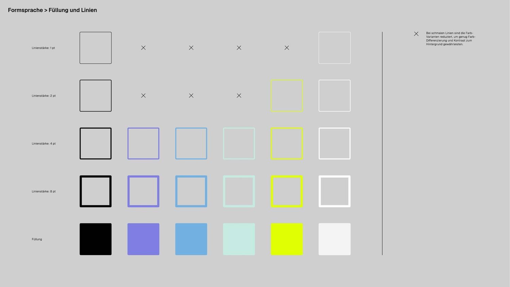
{kind=link}
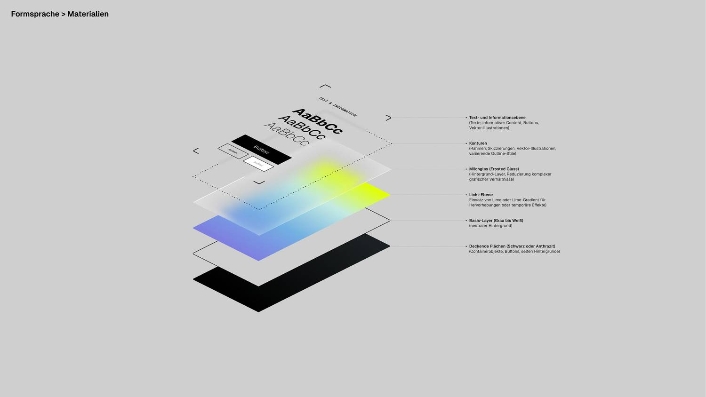
{kind=link}
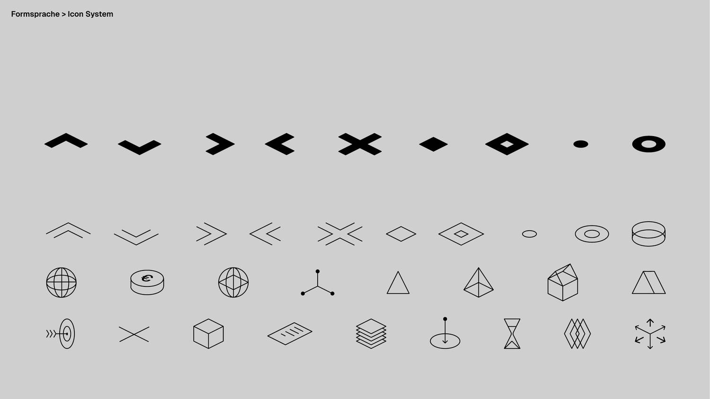
foundations/iconography.html
foundations/illustration.html
foundations/illustration.htmlassets/js/cf-icons.js and laid out against the plate row by row on
Foundations · Iconography. Two glyphs
in the set are not on the plate, cf-plus and cf-minus, and
they are named there. Do not import a third-party icon library: if a mark is missing,
this plate is the brief.
Logo
Implemented in Foundations · Logo. Production SVGs are in assets/img/logo/.
{kind=link}
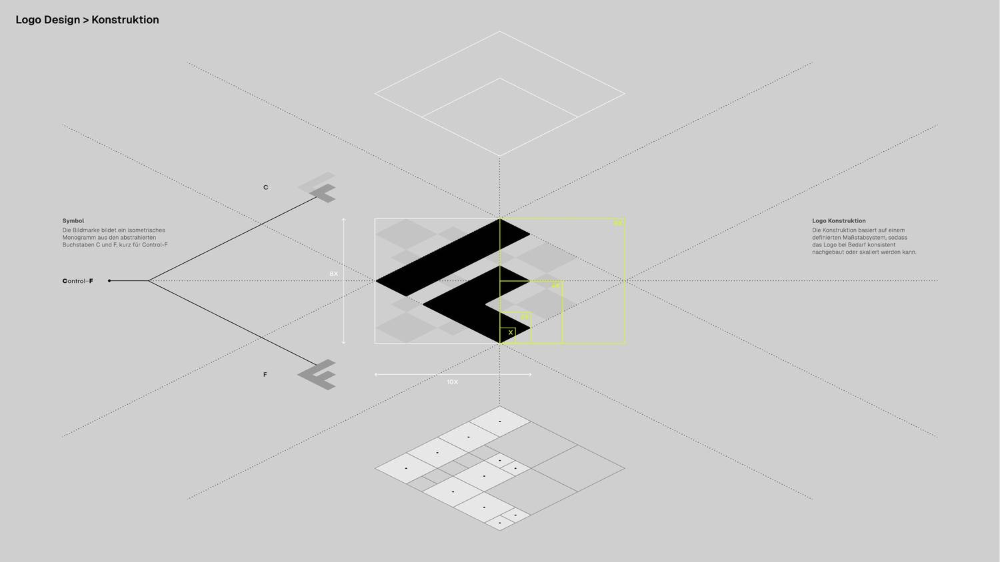
{kind=link}
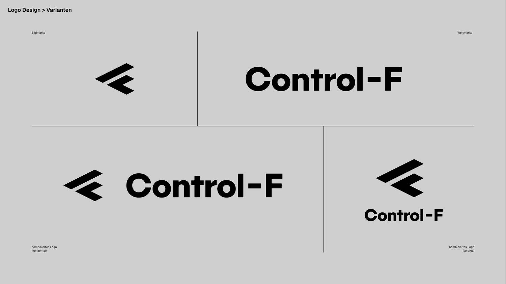
{kind=link}
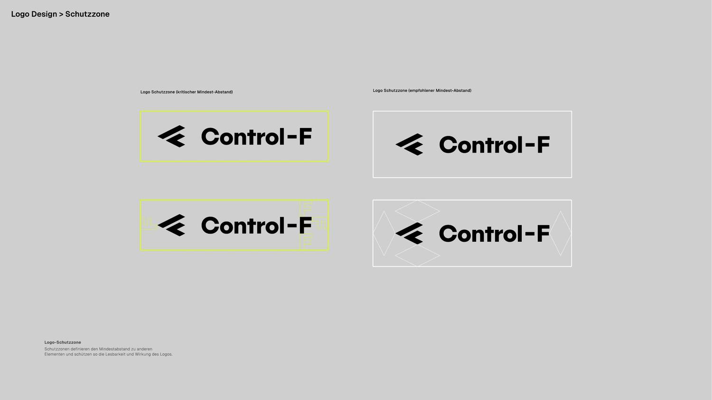
{kind=link}
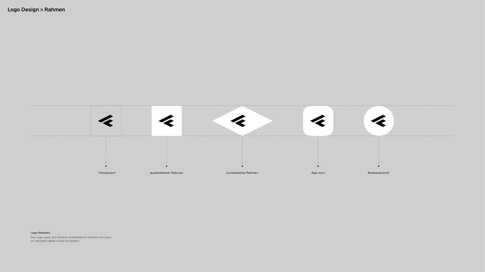
cf-symbol-black.svg, X is 60 in its own
600 × 480 units, the frame is 10X × 8X, one bar is 2X and the gap between the bars is
X. The lockup is 3331 × 480, which is 55.5X.
→ The mark on its unit
Page mockups
The two designed pages, full length. These are what Landing Page and Über uns are measured against — open both side by side when changing a component that appears in them.
Landing Page
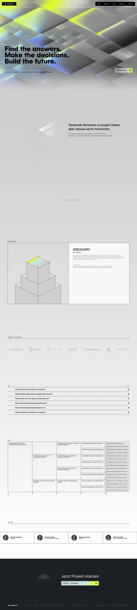
Über uns
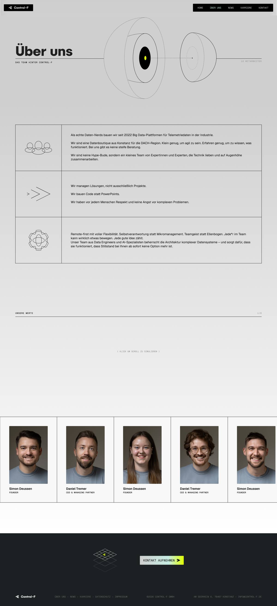
Process illustrations — source vectors
The four process cards as Figma exported them, text outlined, at the original 1440 × 912. This is the geometry the final illustrations should be cut from: the isometric construction, the gradient stops and the dash patterns are all in here at full precision. Path coordinates have been rounded to two decimals to keep the files manageable — visually identical, roughly 10 % smaller.
| Card | File | Object |
|---|---|---|
| 01 Discovery | 01-discovery.svg | stacked cuboids |
| 02 Datenfundament | 02-datenfundament.svg | layered diamonds |
| 03 Weniger Ausfälle | 03-weniger-ausfaelle.svg | solid of revolution |
| 04 Mehr Leistung | 04-mehr-leistung.svg | sphere with orbit |
{kind=link}
{kind=link}
{kind=link}
{kind=link}
Figma spec dump
figma-process-card-spec.css.txt
— the raw CSS Figma emits for the process card: every padding, gap, font size and
gradient stop as the designer set them. This is the tie-breaker for exact values, and
it is where the 132.36° gradient angle and the 11 px label size come from.
The full archive
Everything else lives outside the repo in
control_f_website_new_design/, next to this checkout. It is gitignored —
194 MB of manual PDFs, the master logo artwork, uncompressed mockups, the original
photography and the hero video.
control_f_website_new_design/ ├── 01-brand-manual/ 41 plates in 7 chapters ├── 02-logo/ 8 production SVGs + master PDF ├── 03-mockups/ full PNG + SVG exports, process cards ├── 04-photography/ portraits / casual / group, each colour + b/w ├── 05-motion/ control-f_pattern-motion-2k.mp4/.mov (master) └── 99-archive/ superseded prototypes
Its README.md indexes the whole thing and maps each chapter to the page
here that implements it.